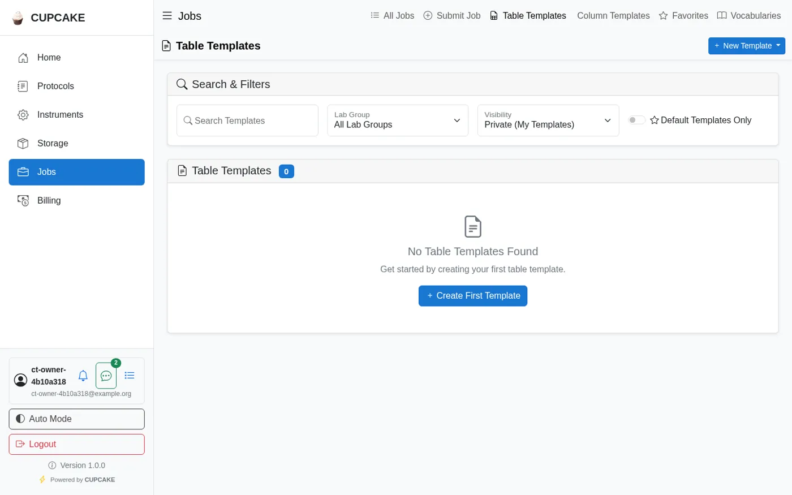
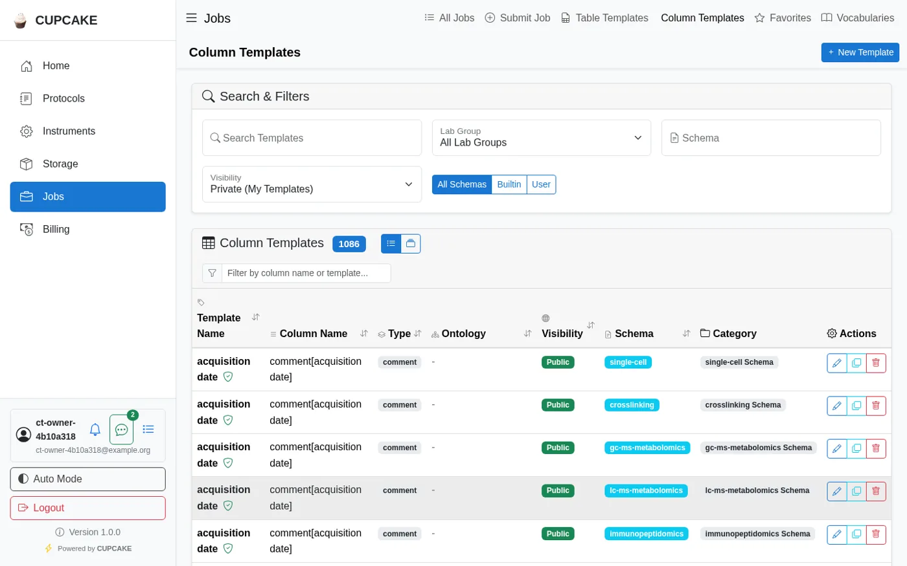
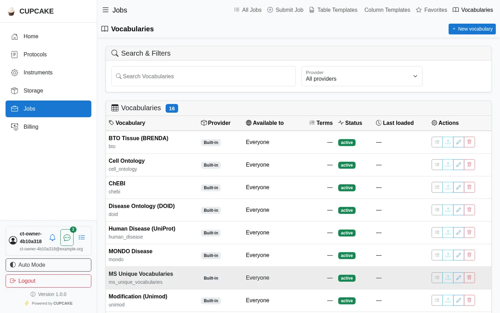

The metadata tables of jobs follow the SDRF format. Their columns come from templates, their values can be suggested from vocabularies and favourites, and tables are imported and exported as SDRF or Excel files.
- Table Templates are sets of columns that jobs' metadata tables start from.
- Column Templates define single columns: their SDRF name, type, ontology and default value.
- Favorites keeps values used often, for yourself, a lab group or everyone.
- Vocabularies are the term lists that columns suggest values from.



In a job's metadata table, Import reads an SDRF or Excel file, Export writes one, Validate SDRF checks the table, and Search & Replace replaces values. Columns marked Staff Only are filled in by staff. The Cupcake Vanilla manual describes these tables in detail.